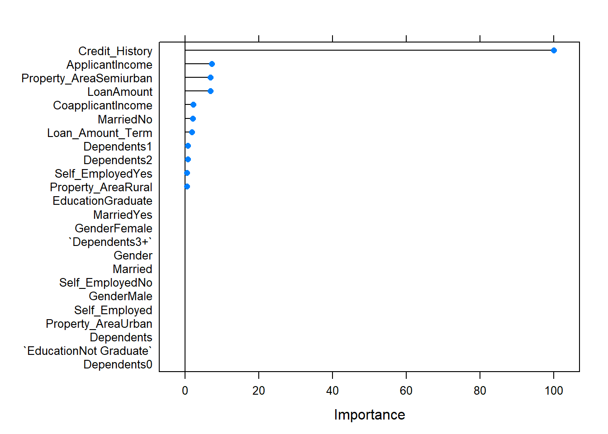

Template for ML modelling
Using machine learning is a highly repetitive process. In this notebook I tried to create unified template to save typing time in my next projects. Most of the time it’s as easy as changing input dataset, and in other cases it is also helpful as a reminder of steps to make.
Basics
library(tidyverse)
library(caTools)
library(ROCR)
library(caret)Here we assign our dataset to name df and changing the target column name to TARGET
df <- read.csv("Train.csv", stringsAsFactors = F)
df<-df%>%select(-Loan_ID)
name_target<-"Loan_Status"
names(df)[which(names(df)==name_target)]<-"TARGET"Here is the place for explanatory data analysis. As this process is highly dependent on the dataset, I included only small chunk.
df%>%summary()## Gender Married Dependents
## Length:614 Length:614 Length:614
## Class :character Class :character Class :character
## Mode :character Mode :character Mode :character
##
##
##
##
## Education Self_Employed ApplicantIncome CoapplicantIncome
## Length:614 Length:614 Min. : 150 Min. : 0
## Class :character Class :character 1st Qu.: 2878 1st Qu.: 0
## Mode :character Mode :character Median : 3812 Median : 1188
## Mean : 5403 Mean : 1621
## 3rd Qu.: 5795 3rd Qu.: 2297
## Max. :81000 Max. :41667
##
## LoanAmount Loan_Amount_Term Credit_History Property_Area
## Min. : 9.0 Min. : 12 Min. :0.0000 Length:614
## 1st Qu.:100.0 1st Qu.:360 1st Qu.:1.0000 Class :character
## Median :128.0 Median :360 Median :1.0000 Mode :character
## Mean :146.4 Mean :342 Mean :0.8422
## 3rd Qu.:168.0 3rd Qu.:360 3rd Qu.:1.0000
## Max. :700.0 Max. :480 Max. :1.0000
## NA's :22 NA's :14 NA's :50
## TARGET
## Length:614
## Class :character
## Mode :character
##
##
##
## df$TARGET%>%summary()## Length Class Mode
## 614 character characterPreprocessing
Now it’s time for preprocessing the dataset to suit Caret package methodology. First step is cropping the dataset. Use this step only if you encounter memory usage problems during fitting the model.
#index_head<-createDataPartition(df$TARGET, p =0.005, list = F) #experiment with p value, the more data you leave unchaged the better for the accuracy.
#df_small<-df[index_head,]
df_small<-dfDealing with missing values
There are quite a few approaches to deal with missing values, and the question what to do is highly case-dependent. Here I’m using median imputation for numeric variables and changing NA value to “na” string in text variables. Using this technique you will probably obtain some reasonable baseline to test out another ideas.
df_small%>%
mutate_if(is.numeric,function(x) ifelse(is.na(x), quantile(x, 0.5, na.rm=T)%>%as.numeric(), x))%>% #numeric variables
mutate_if(function(x) !is.numeric(x), function(x) ifelse(is.na(x), "na", x))->df_smallNext step is using dummy variables to encode strings as numbers. This is versatile approach that will work using every model, but this step isn’t always necessary as some models (decision trees for example) can also deal with categorical variables.
dummies <- dummyVars(TARGET ~ ., data = df_small)
df_small_dum<-predict(dummies, df_small)%>%as.data.frame()
df_small_dum$TARGET<-as.factor(df_small$TARGET)
df_small<-df_small_dum
rm(df_small_dum)The dataset is almost ready to modelling. Other steps to add would be for example dimensionality reduction using PCA.
Creating training and test sets:
index_train<-createDataPartition(df_small$TARGET, p=0.7, list=F)
training<-df_small[index_train, ]
test<-df_small[-index_train, ]To save execution time good idea is to save preprocessed dataset to a file.
save.image("data_preprocessed.Rdata")
#load("data_preprocessed.RData")Modelling
And now the funniest part. Creating models and evaluation using caret package is a piece of cake. A standard approach would be to define training control (in this case repeatedCV) and use it iteratively using different models to obtain better and better results. Last step is comparing the models using resampling and choosing the winner.
library(gbm)
tr_cont<- trainControl(method="repeatedcv",
#add these two lines if you are using AUC as a metric:
#summaryFunction = twoClassSummary,
#classProbs = T,
repeats=2, number=2)Model 1- gbm
model1<-train(TARGET~. , data= training,
method="gbm",
#metric="ROC",
trControl=tr_cont
)## Iter TrainDeviance ValidDeviance StepSize Improve
## 1 1.1790 nan 0.1000 0.0327
## 2 1.1338 nan 0.1000 0.0242
## 3 1.0944 nan 0.1000 0.0230
## 4 1.0633 nan 0.1000 0.0128
## 5 1.0447 nan 0.1000 0.0097
## 6 1.0267 nan 0.1000 0.0076
## 7 1.0148 nan 0.1000 0.0072
## 8 1.0032 nan 0.1000 0.0046
## 9 0.9892 nan 0.1000 0.0046
## 10 0.9806 nan 0.1000 0.0025
## 20 0.9424 nan 0.1000 -0.0027
## 40 0.8893 nan 0.1000 -0.0011
## 60 0.8682 nan 0.1000 -0.0014
## 80 0.8460 nan 0.1000 -0.0050
## 100 0.8276 nan 0.1000 -0.0022
## 120 0.8106 nan 0.1000 -0.0015
## 140 0.7977 nan 0.1000 -0.0039
## 150 0.7887 nan 0.1000 -0.0006
##
## Iter TrainDeviance ValidDeviance StepSize Improve
## 1 1.1802 nan 0.1000 0.0247
## 2 1.1402 nan 0.1000 0.0196
## 3 1.1048 nan 0.1000 0.0192
## 4 1.0728 nan 0.1000 0.0147
## 5 1.0428 nan 0.1000 0.0113
## 6 1.0386 nan 0.1000 -0.0031
## 7 1.0320 nan 0.1000 -0.0007
## 8 1.0056 nan 0.1000 0.0104
## 9 0.9859 nan 0.1000 0.0038
## 10 0.9681 nan 0.1000 0.0067
## 20 0.8954 nan 0.1000 -0.0024
## 40 0.8197 nan 0.1000 -0.0002
## 60 0.7631 nan 0.1000 -0.0031
## 80 0.7149 nan 0.1000 -0.0008
## 100 0.6757 nan 0.1000 -0.0049
## 120 0.6398 nan 0.1000 -0.0002
## 140 0.6161 nan 0.1000 -0.0014
## 150 0.6035 nan 0.1000 -0.0011
##
## Iter TrainDeviance ValidDeviance StepSize Improve
## 1 1.1781 nan 0.1000 0.0305
## 2 1.1288 nan 0.1000 0.0224
## 3 1.0885 nan 0.1000 0.0196
## 4 1.0602 nan 0.1000 0.0125
## 5 1.0389 nan 0.1000 0.0085
## 6 1.0103 nan 0.1000 0.0102
## 7 0.9854 nan 0.1000 0.0092
## 8 0.9639 nan 0.1000 0.0053
## 9 0.9419 nan 0.1000 0.0057
## 10 0.9271 nan 0.1000 0.0045
## 20 0.8404 nan 0.1000 -0.0101
## 40 0.7350 nan 0.1000 -0.0031
## 60 0.6659 nan 0.1000 -0.0045
## 80 0.6176 nan 0.1000 -0.0030
## 100 0.5748 nan 0.1000 -0.0052
## 120 0.5330 nan 0.1000 -0.0036
## 140 0.4857 nan 0.1000 -0.0010
## 150 0.4729 nan 0.1000 -0.0010
##
## Iter TrainDeviance ValidDeviance StepSize Improve
## 1 1.1905 nan 0.1000 0.0318
## 2 1.1538 nan 0.1000 0.0183
## 3 1.1256 nan 0.1000 0.0133
## 4 1.0973 nan 0.1000 0.0135
## 5 1.0794 nan 0.1000 0.0107
## 6 1.0668 nan 0.1000 0.0067
## 7 1.0501 nan 0.1000 0.0061
## 8 1.0441 nan 0.1000 -0.0035
## 9 1.0321 nan 0.1000 0.0052
## 10 1.0283 nan 0.1000 -0.0076
## 20 0.9618 nan 0.1000 -0.0033
## 40 0.8842 nan 0.1000 -0.0009
## 60 0.8421 nan 0.1000 0.0006
## 80 0.8000 nan 0.1000 -0.0034
## 100 0.7754 nan 0.1000 -0.0024
## 120 0.7526 nan 0.1000 -0.0038
## 140 0.7314 nan 0.1000 -0.0038
## 150 0.7208 nan 0.1000 -0.0006
##
## Iter TrainDeviance ValidDeviance StepSize Improve
## 1 1.1892 nan 0.1000 0.0207
## 2 1.1500 nan 0.1000 0.0150
## 3 1.1121 nan 0.1000 0.0085
## 4 1.0783 nan 0.1000 0.0148
## 5 1.0498 nan 0.1000 0.0104
## 6 1.0295 nan 0.1000 0.0111
## 7 1.0155 nan 0.1000 0.0037
## 8 1.0063 nan 0.1000 -0.0032
## 9 0.9862 nan 0.1000 0.0018
## 10 0.9702 nan 0.1000 0.0043
## 20 0.8720 nan 0.1000 -0.0006
## 40 0.7719 nan 0.1000 -0.0020
## 60 0.6926 nan 0.1000 -0.0030
## 80 0.6412 nan 0.1000 -0.0023
## 100 0.6025 nan 0.1000 -0.0026
## 120 0.5646 nan 0.1000 -0.0037
## 140 0.5308 nan 0.1000 -0.0020
## 150 0.5187 nan 0.1000 -0.0025
##
## Iter TrainDeviance ValidDeviance StepSize Improve
## 1 1.1781 nan 0.1000 0.0178
## 2 1.1296 nan 0.1000 0.0202
## 3 1.0882 nan 0.1000 0.0092
## 4 1.0583 nan 0.1000 0.0147
## 5 1.0317 nan 0.1000 0.0110
## 6 1.0085 nan 0.1000 0.0079
## 7 0.9838 nan 0.1000 0.0079
## 8 0.9628 nan 0.1000 0.0052
## 9 0.9472 nan 0.1000 0.0029
## 10 0.9335 nan 0.1000 0.0023
## 20 0.8277 nan 0.1000 -0.0006
## 40 0.7013 nan 0.1000 -0.0005
## 60 0.6207 nan 0.1000 -0.0040
## 80 0.5478 nan 0.1000 -0.0009
## 100 0.4937 nan 0.1000 -0.0047
## 120 0.4490 nan 0.1000 -0.0042
## 140 0.4101 nan 0.1000 -0.0014
## 150 0.3881 nan 0.1000 -0.0012
##
## Iter TrainDeviance ValidDeviance StepSize Improve
## 1 1.1953 nan 0.1000 0.0271
## 2 1.1496 nan 0.1000 0.0208
## 3 1.1281 nan 0.1000 0.0137
## 4 1.1043 nan 0.1000 0.0119
## 5 1.0840 nan 0.1000 0.0111
## 6 1.0652 nan 0.1000 0.0076
## 7 1.0634 nan 0.1000 -0.0036
## 8 1.0483 nan 0.1000 0.0058
## 9 1.0365 nan 0.1000 0.0055
## 10 1.0245 nan 0.1000 0.0037
## 20 0.9738 nan 0.1000 -0.0027
## 40 0.9086 nan 0.1000 -0.0005
## 60 0.8682 nan 0.1000 -0.0036
## 80 0.8320 nan 0.1000 -0.0050
## 100 0.8118 nan 0.1000 -0.0012
## 120 0.7961 nan 0.1000 -0.0010
## 140 0.7768 nan 0.1000 -0.0011
## 150 0.7713 nan 0.1000 -0.0018
##
## Iter TrainDeviance ValidDeviance StepSize Improve
## 1 1.1826 nan 0.1000 0.0267
## 2 1.1439 nan 0.1000 0.0195
## 3 1.1082 nan 0.1000 0.0154
## 4 1.0867 nan 0.1000 0.0113
## 5 1.0610 nan 0.1000 0.0113
## 6 1.0385 nan 0.1000 0.0079
## 7 1.0228 nan 0.1000 0.0086
## 8 1.0098 nan 0.1000 0.0061
## 9 0.9941 nan 0.1000 0.0057
## 10 0.9897 nan 0.1000 -0.0057
## 20 0.8892 nan 0.1000 -0.0057
## 40 0.7864 nan 0.1000 -0.0024
## 60 0.7208 nan 0.1000 -0.0038
## 80 0.6744 nan 0.1000 -0.0047
## 100 0.6348 nan 0.1000 -0.0026
## 120 0.5948 nan 0.1000 -0.0015
## 140 0.5650 nan 0.1000 -0.0024
## 150 0.5545 nan 0.1000 -0.0037
##
## Iter TrainDeviance ValidDeviance StepSize Improve
## 1 1.1858 nan 0.1000 0.0277
## 2 1.1398 nan 0.1000 0.0204
## 3 1.1024 nan 0.1000 0.0150
## 4 1.0691 nan 0.1000 0.0063
## 5 1.0390 nan 0.1000 0.0059
## 6 1.0141 nan 0.1000 0.0087
## 7 0.9935 nan 0.1000 0.0065
## 8 0.9692 nan 0.1000 0.0062
## 9 0.9607 nan 0.1000 -0.0029
## 10 0.9345 nan 0.1000 0.0078
## 20 0.8230 nan 0.1000 -0.0002
## 40 0.7124 nan 0.1000 -0.0020
## 60 0.6359 nan 0.1000 -0.0012
## 80 0.5735 nan 0.1000 -0.0053
## 100 0.5240 nan 0.1000 -0.0025
## 120 0.4823 nan 0.1000 -0.0031
## 140 0.4464 nan 0.1000 -0.0031
## 150 0.4279 nan 0.1000 -0.0028
##
## Iter TrainDeviance ValidDeviance StepSize Improve
## 1 1.1910 nan 0.1000 0.0307
## 2 1.1502 nan 0.1000 0.0249
## 3 1.1137 nan 0.1000 0.0192
## 4 1.0809 nan 0.1000 0.0099
## 5 1.0560 nan 0.1000 0.0109
## 6 1.0349 nan 0.1000 0.0102
## 7 1.0232 nan 0.1000 0.0074
## 8 1.0110 nan 0.1000 0.0063
## 9 0.9992 nan 0.1000 0.0055
## 10 0.9948 nan 0.1000 -0.0019
## 20 0.9351 nan 0.1000 -0.0043
## 40 0.8792 nan 0.1000 -0.0033
## 60 0.8528 nan 0.1000 -0.0022
## 80 0.8300 nan 0.1000 -0.0021
## 100 0.8162 nan 0.1000 -0.0008
## 120 0.8053 nan 0.1000 -0.0057
## 140 0.7941 nan 0.1000 -0.0030
## 150 0.7893 nan 0.1000 -0.0010
##
## Iter TrainDeviance ValidDeviance StepSize Improve
## 1 1.1802 nan 0.1000 0.0224
## 2 1.1331 nan 0.1000 0.0131
## 3 1.0913 nan 0.1000 0.0175
## 4 1.0597 nan 0.1000 0.0132
## 5 1.0333 nan 0.1000 0.0118
## 6 1.0134 nan 0.1000 0.0048
## 7 0.9902 nan 0.1000 0.0066
## 8 0.9760 nan 0.1000 0.0055
## 9 0.9609 nan 0.1000 0.0027
## 10 0.9466 nan 0.1000 0.0061
## 20 0.8934 nan 0.1000 -0.0063
## 40 0.8085 nan 0.1000 -0.0022
## 60 0.7563 nan 0.1000 -0.0061
## 80 0.7120 nan 0.1000 -0.0082
## 100 0.6749 nan 0.1000 -0.0039
## 120 0.6540 nan 0.1000 -0.0022
## 140 0.6219 nan 0.1000 -0.0027
## 150 0.6091 nan 0.1000 -0.0028
##
## Iter TrainDeviance ValidDeviance StepSize Improve
## 1 1.1770 nan 0.1000 0.0281
## 2 1.1320 nan 0.1000 0.0184
## 3 1.0914 nan 0.1000 0.0215
## 4 1.0780 nan 0.1000 -0.0071
## 5 1.0508 nan 0.1000 0.0074
## 6 1.0208 nan 0.1000 0.0073
## 7 0.9957 nan 0.1000 0.0092
## 8 0.9763 nan 0.1000 0.0072
## 9 0.9580 nan 0.1000 0.0068
## 10 0.9440 nan 0.1000 0.0037
## 20 0.8414 nan 0.1000 -0.0025
## 40 0.7509 nan 0.1000 -0.0096
## 60 0.6709 nan 0.1000 -0.0030
## 80 0.6170 nan 0.1000 -0.0038
## 100 0.5630 nan 0.1000 -0.0057
## 120 0.5109 nan 0.1000 -0.0057
## 140 0.4669 nan 0.1000 -0.0040
## 150 0.4487 nan 0.1000 -0.0031
##
## Iter TrainDeviance ValidDeviance StepSize Improve
## 1 1.1887 nan 0.1000 0.0254
## 2 1.1458 nan 0.1000 0.0234
## 3 1.1110 nan 0.1000 0.0167
## 4 1.0825 nan 0.1000 0.0126
## 5 1.0610 nan 0.1000 0.0126
## 6 1.0435 nan 0.1000 0.0078
## 7 1.0303 nan 0.1000 0.0073
## 8 1.0179 nan 0.1000 0.0060
## 9 1.0068 nan 0.1000 0.0034
## 10 0.9986 nan 0.1000 0.0034
## 20 0.9555 nan 0.1000 0.0013
## 40 0.9157 nan 0.1000 -0.0007
## 50 0.8978 nan 0.1000 -0.0003Checking performance and stats of the model
model1## Stochastic Gradient Boosting
##
## 431 samples
## 24 predictor
## 2 classes: 'N', 'Y'
##
## No pre-processing
## Resampling: Cross-Validated (2 fold, repeated 2 times)
## Summary of sample sizes: 215, 216, 215, 216
## Resampling results across tuning parameters:
##
## interaction.depth n.trees Accuracy Kappa
## 1 50 0.8085810 0.4813899
## 1 100 0.8027832 0.4769201
## 1 150 0.7958226 0.4671833
## 2 50 0.8050980 0.4807834
## 2 100 0.7911929 0.4601275
## 2 150 0.7749300 0.4317283
## 3 50 0.8062446 0.4927164
## 3 100 0.7969692 0.4830147
## 3 150 0.7911553 0.4758167
##
## Tuning parameter 'shrinkage' was held constant at a value of 0.1
##
## Tuning parameter 'n.minobsinnode' was held constant at a value of 10
## Accuracy was used to select the optimal model using the largest value.
## The final values used for the model were n.trees = 50, interaction.depth
## = 1, shrinkage = 0.1 and n.minobsinnode = 10.#plot(model1)varImp(model1)%>%plot()
Model 2- glm
model2<-train(TARGET~. , data= training,
method="glm",
#metric="ROC",
family=binomial(), #this is a parameter of glm model, to remove in other models
trControl=tr_cont
)Checking performance and stats of the model
model2## Generalized Linear Model
##
## 431 samples
## 24 predictor
## 2 classes: 'N', 'Y'
##
## No pre-processing
## Resampling: Cross-Validated (2 fold, repeated 2 times)
## Summary of sample sizes: 216, 215, 215, 216
## Resampling results:
##
## Accuracy Kappa
## 0.7888512 0.4487843varImp(model2)%>%plot()
… and so on. Once the schema is right, adding new models to test is as easy as copying few lines and changing name of the model.